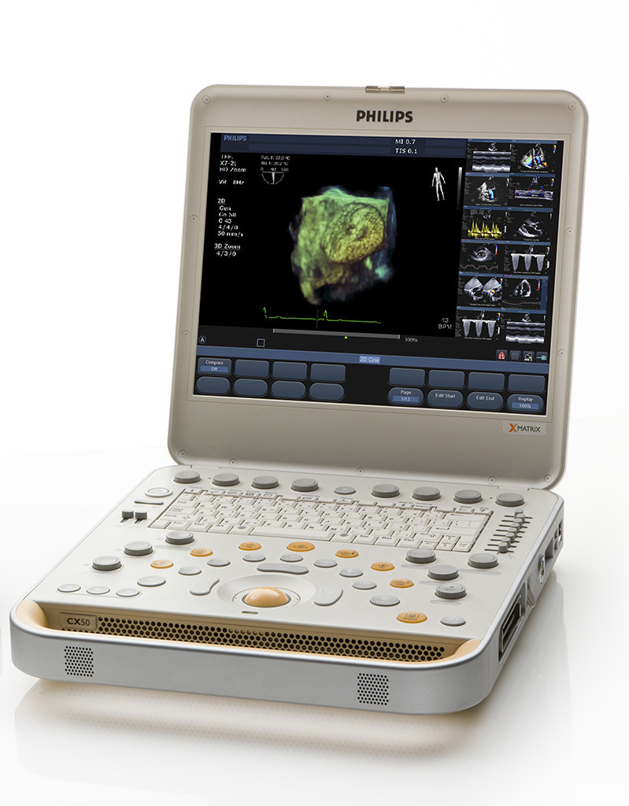

Work / Philips Ultrasound CX50
Philips & IBM · 2009
Philips Ultrasound CX50

Work / Philips Ultrasound CX50
Philips & IBM · 2009
Philips Ultrasound CX50. At Philips I was new hire to their North American Medical Design team. My role was to work with a newly acquired business (HP Medical) and work to integrate the Philips Design methodologies to this new business. This Ultra Sound machine was the first full functioning machine that was miniaturized for Philips medical. Typically these systems are large and are built on carts. Making a system that was truly portable and had depth for the clinician to do their work. Understanding the clinicians workflow we were able to layout the major modalities for ease of use. Designing medical equipment is about understanding the workflow for the type of clinician you are designing for. Philips has a strong Design Identity that needed to be carried thru all of their products. This product represented at the time the largest single investment in technology for the company.
2009 Industry Forum, (iF) award for design excellence at Hannover for the Philips CX50 Ultrasound System.
2009 Red Dot Award distinction for high design quality for the Philips CX50 Ultrasound System.
